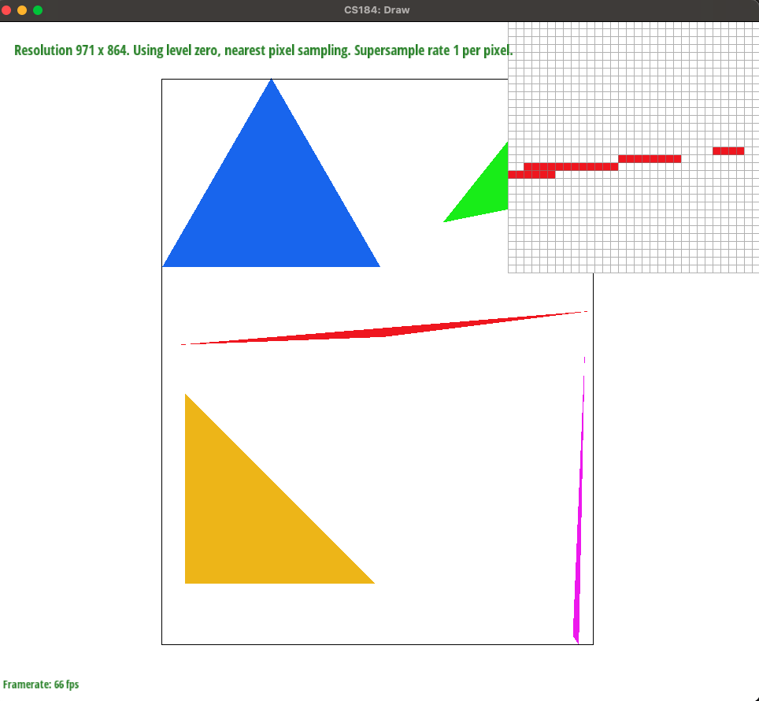
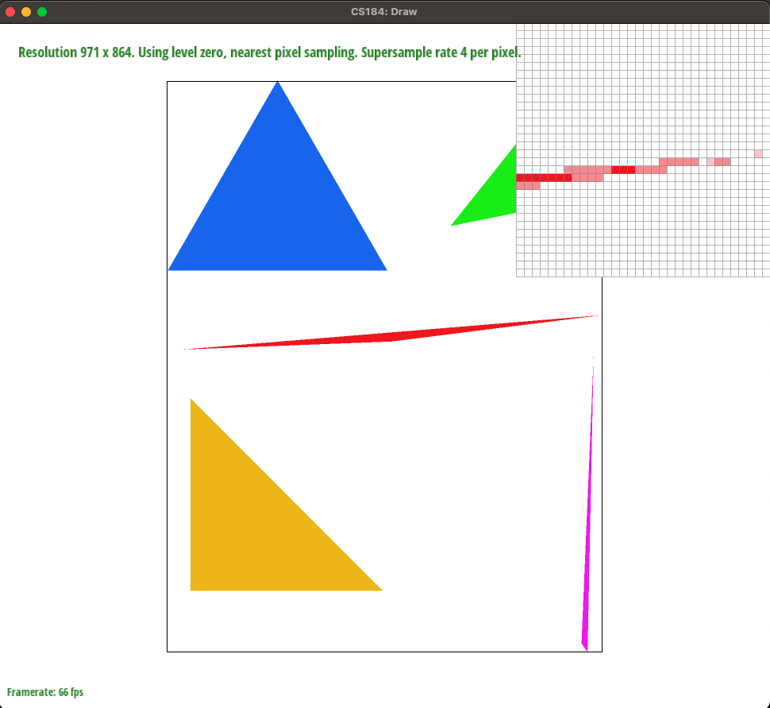
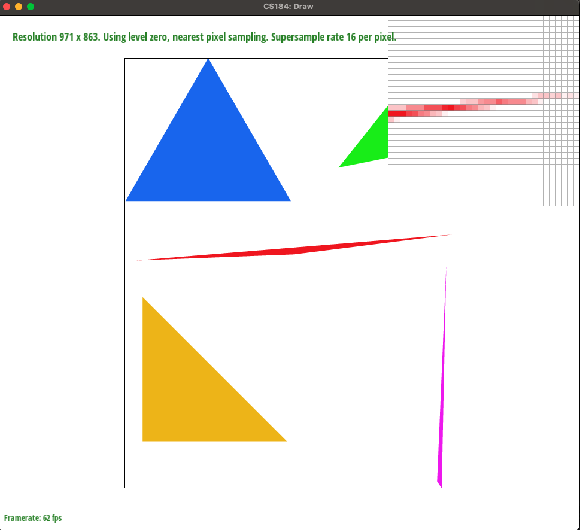
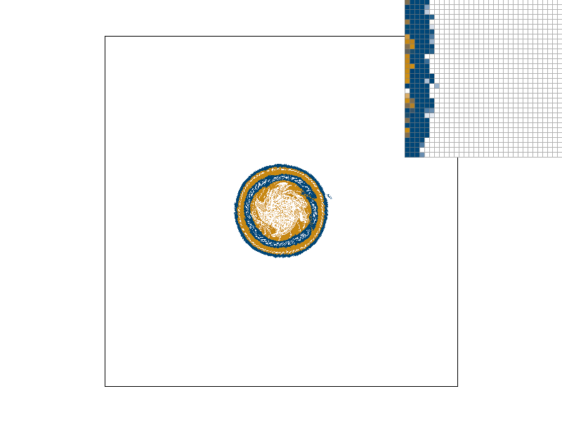
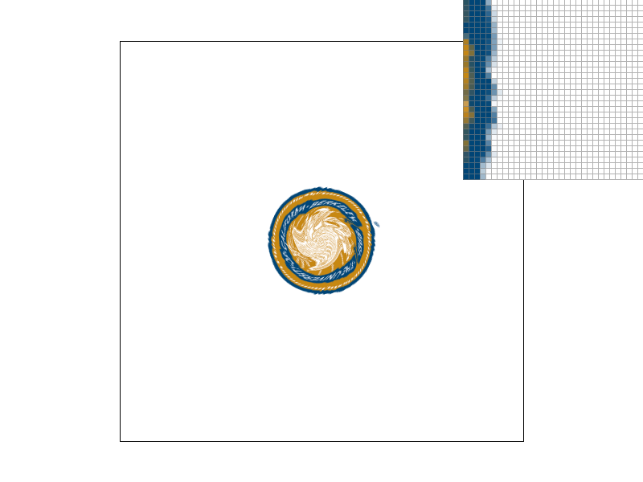

Overview
Give a high-level overview of what you implemented in this project. Think about what you've built as a whole. Share your thoughts on what interesting things you've learned from completing the project.
Section I: Rasterization
Part 1: Rasterizing single-color triangles
We start by finding the left-most x-coordinate and the right-most x-coordinate out of our points. Then we find the lowest and highest y-coordinates out of our points. We iterate starting at the left-most x-coordinate to the right-most coordinate, with an inner loop that runs from the lowest y-coordinate to the highest y-coordinate. This effectively creates a rectangle that contains our triangle in it (the bounding box). At each point, we check if the point is in our triangle by using the point-in-triangle test described in the lecture. If a point is in our triangle,we color it in.
Our algorithm is no worse than one that checks each sample within the bounding box of the triangle because the loops in our algorithm iterate from the smallest to largest triangle point x values, giand from the smallest to largest triangle point y values. These iterations thus cover all the points within the triangle’s bounding box. The calculations done in the nested loop in our algorithm are to check the sampled point with the point-in-triangle test.
Here is an example 2x2 gridlike structure using an HTML table. Each tr is a row and each td is a column in that row. You might find this useful for framing and showing your result images in an organized fashion.
Part 2: Antialiasing triangles
Our algorithm split each pixel into sample_rate] amount of pixels (ie: if sample_rate = 4, our pixel was split into quarters). (which is larger in size than the framebuffer). Afterwards, we took all the samples in the sample_buffer that corresponded to a pixel and took the average of the RGB values. The resulting colors were then put into our framebuffer.
Supersampling is useful because it can get rid of jaggies in an image where there is a sudden change in frequency.
Modifications were made to the rasterization pipeline via the resolve_to_framebuffer() function by updating it to take the average color of a sample_rate amount of pixels for a single pixel in the frame buffer. We also changed how much the sample_buffer is resized in the functions set_sample_rate() and set_framebuffer_target() to reflect the impact of the sample_rate.
We were able to antialias our triangles with supersampling because we could effectively “blur” any sudden changes in frequencies. We were able to do this with the samples because we took the average of the colors and put those values into the framebuffer.
|

|

|

|
Sample rate 1: With a sampling rate of 1, we see no anti aliasing effects. There are still jaggies and the skinny red triangle corner is all one solid color (no averaging yet). There is a small segment that is separated from the rest of the triangle.
Sample rate 4: With a sampling rate of 4, we start to see anti aliasing effects as the red color is being blurred into shades of pink. The small separated segment has become a bit smaller and is colored lighter due to averaging red with white.
Sample rate 16: With a sampling rate of 16, we can see the triangle corner is very blurred in red and pink. The small separated segment is no longer present and the triangle corner is an extremely light shade of pink (averaged with lots of white).
Part 3: Transforms
We made our robot stretch in the YMCA “Y” pose. After scaling the arms (this part was already in the code), we rotated his left and right arms by 70 and -70 degrees respectively and then adjusted the translation (translate(80 -70) in the right arm and translate(-80, -70) in the left) to make his arms look like they connected at the top of his torso.
Section II: Sampling
Part 4: Barycentric coordinates
Using the line equation that is used in point-in-triangle tests, we find the line equation values for point A respective to line BC, B respective to AC, and C respective to AB. To find the barycentric coordinates of a given point, we would find its line equation values with respect to each of the triangle’s lines, and we divide by the line equation value of the vertex not included in the line. Using point A, B, and C will give us alpha, beta, gamma respectively. We then normalize the values so that alpha + beta + gamma = 1. Thus, the point’s barycentric coordinate is (alpha, beta, gamma). To find the color we should fill the point with, we add together A, B, and C’s colors with the equation alpha * A + beta * B + gamma * C. As we can see in the triangle with one red, one green, and one blue vertex, points closer to the red vertex are more red while points closer to the middle of the triangle are more brown, as each point has a fairly equal influence on the color.
Part 5: "Pixel sampling" for texture mapping
We first convert the x,y pixel coordinate to a u,v texel coordinate by using the pixel’s barycentric coordinates on the triangle vertices’ (u,v) coordinates. In nearest sampling, we rounded the (u,v) coordinate to the closest texel and used that texel’s color for the given pixel. In bilinear sampling, we found the four nearest texels of the (u,v) coordinate and used linear interpolation to determine the color of the pixel from the four texels.
With nearest sampling at 1 sample per pixel, we can see that the edge of the seal has some straggler pixels that are colored in. This is due to nearest sampling only using the one nearest texel to determine a pixel’s color. Even when our sample size increases to 16, these straggler pixels are still colored in, albeit with lighter colors that are more blended into the white background due to our increased sample size and anti-aliasing.
|  |  |
However, with bilinear sampling, these straggler pixels do not show up since we are taking more surrounding pixels into account and using more lerps to find the color we want our pixel to be. When we increase our sample size from 1 to 16 with bilinear sampling, the edges of the seal are a bit more blurred (as expected from an increase in sample size and anti-aliasing) and we see no straggler pixels.
Part 6: "Level sampling" with mipmaps for texture mapping

|

|

|

|
Section III: Art Competition
If you are not participating in the optional art competition, don't worry about this section!